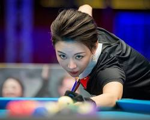

斯诺克传奇
罗尼·奥沙利文 (Ronnie O'Sullivan)
绰号"火箭"。史上最具天赋的斯诺克选手之一，以其惊人的出杆速度和左右开弓的能力闻名。
史蒂芬·亨德利 (Stephen Hendry)
绰号"台球皇帝"。曾7次获得世锦赛冠军，统治了90年代的斯诺克球坛。
丁俊晖 (Ding Junhui)
中国斯诺克领军人物，"中国龙"。首位登上世界第一的亚洲斯诺克选手。
花式九球天后

潘晓婷 (Pan Xiaoting)
中国"九球天后"。中国第一位获得世界锦标赛冠军的台球选手。
艾莉森·费雪 (Allison Fisher)
绰号"毁灭女公爵"。女子台球界的传奇人物，横跨斯诺克与九球两项运动。